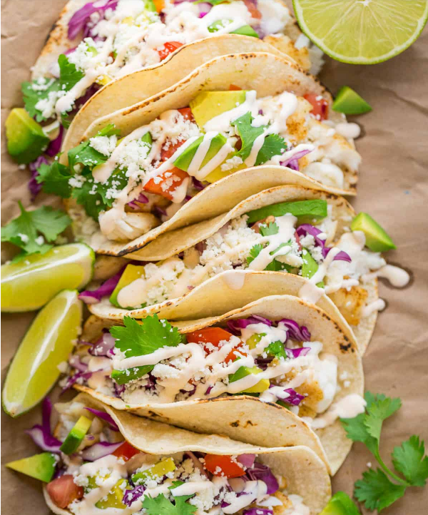

Classic Fish Tacos

Recipe Overview:
This is our go-to recipe for family get togethers and company because it comes together quickly and it always gets rave reviews.
These fish tacos are so flavorful and satisfying but you will feel good and light at the end of the meal.
This recipe is party sized and can be scaled down to feed a smaller crowd. It was developed by my brother-in-law,
Slavik and it has been adopted by pretty much everyone in our family. I have had so many requests to publish the recipe so here it is!
It’s an easy, excellent fish tacos recipe. Thank you Slavik for sharing your awesome fish tacos with us. I’m pretty sure it’s impossible to
ever get tired of this recipe. P.S. They just happen to be gluten free fish tacos!
Ingredients:
- Sour Cream
- Mayo
- Lime Juice
- Garlic Powder
- Sriracha
- Any White Fish
- Tortilla Shells
- Cotija Cheese
Directions:
- Line a large baking sheet with parchment or silicone liner. In a small dish, stir together seasonings: 1/2 tsp cumin, 1/2 tsp cayenne pepper,
1 tsp salt and 1/4 tsp black pepper and evenly sprinkle the seasoning mix over both sides of tilapia.
- Lightly drizzle fish with olive oil and top each piece with a dot of butter. Baked at 375˚F for 20-25 min. If you want it to get a little browned around the edges,
you can broil for 3-5 minutes at the end if desired.
- Combine all the Taco sauce ingredients: 1/2 cup sour cream, 1/3 cup Mayo, 2 Tbsp lime juice (from 1 medium lime), 1 tsp garlic powder, 1 tsp Sriracha sauce, or to taste in a medium bowl or a large measuring cup and whisk together until well blended.
It’s really fun and feels like dining out to serve the sauce in a squeeze bottle.
- To serve the tacos, toast quickly toast the corn tortillas on a large dry skillet or griddle over medium/high heat.
- To assemble: start with the fish then add remaining ingredients finishing off with a generous sprinkle of cotija cheese and finally that awesome taco sauce! Serve with a fresh lime wedge to squeeze extra lime juice over tacos.